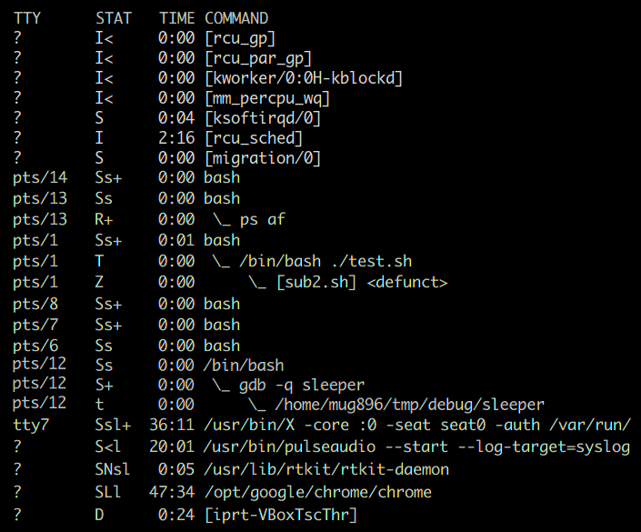
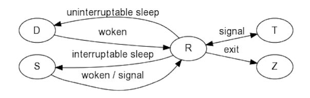
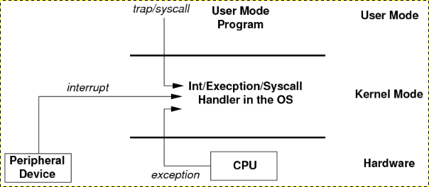
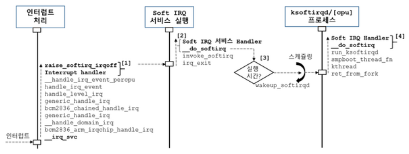

Process State Codes
ps ax 명령을 실행하면 STAT 컬럼에 현재 프로세스의 상태를 나타내는 기호들이 표시됩니다. 아래 첫번째 테이블의 상태 기호가 제일 앞에 오고 그다음에 두번째 테이블의 부가적인 기호가 표시됩니다.
| 기호 | 설명 |
|---|---|
| D | uninterruptible sleep (usually IO) |
| I | Idle kernel thread |
| R | running or runnable (on run queue) |
| S | interruptible sleep (waiting for an event to complete) |
| T | stopped, either by a job control signal or because it is being traced. |
| t | stopped by debugger during the tracing |
| X | dead (should never be seen) |
| Z | defunct ("zombie") process, terminated but not reaped by its parent. |
다음은 BSD 포멧의 부가적인 정보를 나타냅니다.
| 기호 | 설명 |
|---|---|
| < | high-priority (not nice to other users) |
| N | low-priority (nice to other users) |
| L | has pages locked into memory (for real-time and custom IO) |
| s | is a session leader |
| l | is multi-threaded (using CLONE_THREAD, like NPTL pthreads do) |
| + | is in the foreground process group. |
다음은 현재 실행중인 linux OS 의 ps 정보를 발췌한 것입니다.

I : 상단에는 현재 idle 상태에 있는 kernel threads 들을 볼 수 있습니다.
S : 대부분의 프로세스들이 이벤트 처리를 위해 현재 대기중에 있는것을 볼 수 있습니다.
R : ps af 명령은 현재 실행 중이므로 R 로 표시됩니다.
+ : 터미널에 연결돼 있는 interactive bash shell 프로세스들과 ps af 명령은 현재 foreground 로 실행 중인 것을 알 수 있습니다.
s : 터미널에 연결돼 있는 interactive bash shell 프로세스들은 session leader 인것을 알 수 있습니다.
T : test.sh 명령은 현재 suspend job control 명령에 의해 stop 상태입니다. ctrl-z 에 의해 프로그램 실행이 중단됐을때도 이 상태가 됩니다.
Z : sub2.sh 은 test.sh 에서 실행된 background process 인데 현재 종료된 상태 (defunct) 이나 parent 프로세스가 stop 되어있어 좀비 상태로 남아 있습니다. parent 프로세스가 실행을 재개하면 삭제됩니다.
좀비 프로세스는 이미 종료된 프로세스로 프로세스 테이블에서 pid 만 차지하고 있는 상태입니다. 그러므로 실행 중에 사용했던 메모리나 리소스들은 모두 반환된 상태입니다. child process 가 실행되면 parent process 는 종료 상태 값을 얻기 위해 wait system call 을 실행하는데 이때 종료된 child process 가 프로세스 테이블에서 제거됩니다. 하지만 위의 경우는 parent process 가 stop 상태에 있어서 프로세스 테이블에서 제거되지 못하고 좀비 상태로 남아있습니다.
t : 현재 stop 상태인 sleeper 명령은 gdb 에의해 trace 되고 있습니다.
< :
[ ]로 표시되는 대부분의 kernel threads 들과 pulseaudio 는 현재 높은 우선순위로 실행되고 있습니다.N : rtkit-daemon 은 현재 낮은 우선순위로 실행되고 있습니다.
l : X, pulseaudio, chrome 같은 프로그램들은 멀티 스레드를 사용하고 있습니다.
L : 메모리 locking 은 프로세스가 사용하는 가상 주소 공간을 물리적인 메모리에 lock 합니다. lock 된 페이지는 paging, swapping 에서 제외되고 unlock 될때까지 메모리에 존재하는 것이 보장되므로 주로 실시간 처리가 요구되는 프로그램에서 latency 를 줄이기 위해 사용됩니다.
D : D ( uninterruptible sleep ) 은 S ( interruptible sleep ) 과는 다르게 sleep 하는 동안 signal을 처리하지 않습니다. 심지어 kill 신호로 프로세스를 종료시킬 수도 없습니다. 주로 디바이스 드라이버에서 디스크나 네트워크 I/O 를 기다릴때 사용됩니다
[ ]으로 표시되는 경우 : ps 명령은 COMMAND 컬럼의 값을 표시할때 /proc/<pid>/cmdline 에 있는 내용을 사용하는데 여기에 값이 없을 경우 /proc/<pid>/stat 에 있는 명령 이름에 [ ] 를 더해서 표시한다고 합니다. 위 그림에서 보면 kernel threads 들과 zombie process 가된 sub2.sh 이 [ ] 로 표시되고 있습니다.
프로세스 상태 변화 과정

OS 가 실행되는 방식

OS 가 실행되는 방식을 다음과 같이 분류해 볼 수 있습니다.
- interrupt context
하드웨어 인터럽트는 highest priority 로 현재 실행 중인 프로세스와 관계없이 즉시 처리됩니다. 인터럽트 핸들러는 빠른 시간 내에 처리돼야 하므로 top half 와 bottom half 로 나누어서 top half 를 먼저 처리하고 시간이 걸리는 bottom half 는 이후에 softirq, tasklet 에서 처리되거나 kernel thread 에의해 처리됩니다. top half 에서 실행될 때는 중복 실행되는 것을 방지하기 위해 모든 코어에서 해당 interrupt 가 disable 되고 실행 중에 block 되는 일이 없습니다.
스케줄러는 프로세스가 직접 스케줄 함수를 호출하여 실행될 수도 있고( voluntary ), timer interrupt 에의해 실행될 수도 있는데 ( involuntary ) 이때는 interrupt handler 가 특정 flag 값을 설정하면 커널 모드에서 유저 모드( process context )로 복귀 과정에서 check 되어 실행됩니다.
- process context
process context 는 프로세스이므로 스케줄러에 의해 스케줄 될 수 있다는 점입니다. 그러므로 여기서는 실행 중에 sleep, block 될 수 있고 preempted 될 수도 있습니다. 프로그램이 실행되면서 발생하는 system call, exception 이 처리되는 것이 여기에 속합니다. system call 이 atomic 하다는 말이 있는데 이것은 실행 중간에 signal 에의해 interrupt 됐다가 이어서 다시 실행되지 않는다는 뜻입니다. system call 은 wait 상태에서 signal sending 이 되면 EINTR 에러를 반환하고 종료하거나 자동으로 다시 처음부터 시작합니다.
[ kernel threads ]
이것은 위에서 [ ] 로 표시되는 커널 스레드에 해당합니다.
커널 스레드는 일반 사용자 스레드와 동일하게 스케줄 되고 실행되는데
차이점은 유저모드가 아닌 커널모드에서 실행된다는 점이 다릅니다.
/proc/$PID/maps 에서는 프로세스의 메모리 매핑 정보를 볼 수 있는데
커널 스레드는 정보가 표시되지 않습니다.
- atomic context
분류를 process context 와 atomic context 로 하기도 합니다. process context 가 아니기 때문에 스케줄러에 의해 스케줄 되지 못하므로 여기서는 실행 중에 sleep, block 될 수 없고, mutex 도 사용할 수 없습니다. 또한 user space virtual address 에도 접근할 수 없는데 page fault 가 발생할 수 있기 때문입니다 ( 그러면 scheduling 돼야 하므로 )
# 인터럽트 후반부 처리는 softirq 또는 커널 스레드를 이용해 처리될 수 있는데
# 인터럽트 발생 빈도가 아주 높거나 바로 응답이 되어야 할 경우는 softirq 를 사용합니다.
$ watch -d -n1 'cat /proc/softirqs'
# 리눅스 커널에서 제공하는 10가지 softirq 서비스
HI 가장 우선 순위가 높으며 TASKLET_HI로 적용
TIMER per-cpu 동적 타이머로 사용
NET_TX 네트워크 패킷 송신용으로 사용
NET_RX 네트워크 패킷 수신용 사용
BLOCK 블록 디바이스에서 사용
IRQ_POLL IRQ_POLL 연관 동작
TASKLET 일반 태스크릿으로 사용
SCHED 스케줄러에서 주로 사용
HRTIMER 현재 사용 안하나 하위 호완성을 위해 남겨둠
RCU RCU 처리용으로 사용
# ksoftirqd 는 per-cpu 커널 스레드로 softirq 서비스를 스레드 레벨에서 처리합니다.
# softirq 서비스는 프로세스 실행이 멈춘 상태에서 동작하므로 실행 시간이 길면 문제가 될수있어
# 특정 시간이 넘어서면 나머지 부분을 ksoftirqd 커널 스레드가 처리합니다.
$ ps ax | grep ksoftirq[d]
9 ? S 0:29 [ksoftirqd/0] # 이름 뒤에 보이는 숫자는 cpu core 를 나타냄
18 ? S 0:15 [ksoftirqd/1]
24 ? S 0:06 [ksoftirqd/2]
. . .
$ ps ax | grep irq[/] # irq 스레드 : 인터럽트 후반부 처리를 위한 전용 프로세스
183 ? S 0:00 [irq/27-pciehp] # 27 은 인터럽트 번호, pciehp 는 이름
621 ? S 0:00 [irq/42-iwlwifi]
21241 ? S 0:00 [irq/39-mei_me]
21242 ? S 0:00 [irq/18-mmc0]
# worker 스레드 : work 를 실행하는 workqueue 전용 프로세스로
# watch -d -n.5 'ps ax | grep kworke[r]' 를 해보면 스레드 이름이 계속 변경되는 것을 볼 수 있습니다.
$ ps ax | grep kworke[r]
26 ? I< 0:00 [kworker/2:0H-kblockd]
44 ? I< 0:00 [kworker/5:0H-kblockd]
178 ? I< 0:00 [kworker/u17:0]
. . .

softirq 전체 실행 흐름도 http://egloos.zum.com/rousalome/v/9978837
Local timer interrupts 실시간 조회해보기
- Real Time Clock (RTC)
- Programmable Interval Timer (PIT)
- Local APIC timer ( 각 코어마다 가지고있는 Time Stamp Counter (TSC) based timer )
컴퓨터에는 시계가 3 종류가 있습니다. 컴퓨터의 전원을 껐다가 나중에 다시 켜도 시간이 틀리지 않는것은 보드에 있는 건전지로 유지되는 Real Time Clock (RTC) 이 있기 때문인데요. 하지만 이것은 프로그래밍에 자주 사용되지는 않습니다. ( hardware clock 이라고도 함 )
Programmable Interval Timer (PIT) 가 프로그래밍에 사용되는 것으로 보통 system timer ( 또는 timer 또는 system clock ) 라고 합니다. 이 칩에 의해서 주기적으로 인터럽트가 발생해서 커널이 필요한 작업을 하게 됩니다. 가령 10 milliseconds 마다 인터럽트가 발생한다면 ( 이것을 tick 이라고 함 ) 인터럽트가 발생했을 때 커널은 10 milliseconds 가 지난 것을 알 수 있겠죠. 그에 따라 현재 시간을 갱신하고, 현재 실행 중인 프로세스의 timeslice 를 차감하거나 타이머 걸어놓은 것이 있으면 expire 하는 등의 처리를 하게 됩니다.
그런데 이 주기적인 tick 을 이용하는 것은 tick 간격을 크게 하면 그 이하로는 스케줄링을 할 수 없게 되고 그렇다고 tick 간격을 너무 작게하면 tick 처리에만 CPU 시간이 많이 소모되게 됩니다. 그리고 무엇보다도 요즘 같은 저전력 시대에 CPU 가 idle 상태에 남아있는 것을 방해합니다.
따라서 요즘에는 PIT 를 이용하는 주기적인 tick 을 사용하지 않고 ( tickless ), 각 CPU 코어 마다 가지고 있는 Local APIC timer 를 이용해서 커널이 직접 다음 tick 을 스케줄 합니다 ( dynamic tick ). 일종의 on-demand 형식이기 때문에 새로운 태스크가 처리 대기열에 들어오지 않는 이상 CPU 는 저전력 idle 상태로 남아 있을 수 있게 됩니다.
/proc/interrupts 를 이용해서 시스템의 hardware interrupts 를 조회해 볼 수 있습니다.
제일 왼쪽에 있는 값이 인터럽트 번호인데 제일 위의 0 번이 PIT 입니다.
만약에 PIT 값이 변동이 없고 0 에 가까우면 그것은 PIT 를 사용하지 않는 tickless kernel 입니다.
다음은 각 코어마다 가지고 있는 Local APIC timer 의 인터럽트를 조회해보는 것인데요. PIT 인터럽트의 경우는 global interrupt 로 어떤 코어에도 전달될 수 있지만 Local APIC timer 인터럽트는 해당 코어에만 전달됩니다. 아래 명령을 실행했을 때 보이는 숫자는 interrupt 가 처리된 횟수를 나타냅니다. 각 코어 별로 숫자가 표시되고 값이 증가되는 것을 볼 수 있습니다.
$ watch -d -n1 'grep -C3 -i "local timer interrupts" /proc/interrupts'
위로 두 번째는 저같은 경우 IR-PCI-MSI 409600-edge enp0s25 네트워크 카드로 되어있는데 인터넷에서 파일을 다운로드할 때 조회해 보면 값이 크게 증가하는 것을 볼 수 있습니다. 키보드, 마우스, 디스크도 한번 찾아보시고 버튼을 눌렀을 때 몇번 인터럽트가 발생하는지 알아보세요.
네트워크 카드 같은 주변장치에서 발생하는 인터럽트의 처리를 여러 코어에 분배할 수도 있지만 각 코어마다 cache 가 있기 때문에 ( 동기화해야 하므로 ) 효율적이 못하여 특정 코어에 할당합니다.
/proc/irq/번호디렉토리에서 smp_affinity 파일을 통해 코어를 변경할 수 있습니다.New API (NAPI) : high-speed 네트워크 에서는 interrupt 처리에만 많은 CPU 자원이 소모되므로 polling 방식을 함께 사용하여 오버헤드를 줄입니다.
Local APIC timer 는 periodic, one-shot 모드 에서는 카운트에 CPU's external frequency (즉 bus frequency) 가 사용되고 TSC-deadline 모드 에서는 CPU's internal frequency 가 사용됩니다. 그러니까 나노초까지 컨트롤이 가능한 hrtimer (high resolution) 타이머 입니다. PIT 은 standard frequency (1,193,182 Hz) 로 정해져 있습니다. ( https://wiki.osdev.org/APIC_timer )
# /proc/timer_list 를 통해서 현재 pending timers, clock-event sources 등을 볼수있습니다.
$ sudo watch -n.5 'grep -m1 -A20 "^active timers" /proc/timer_list'
$ sudo watch -n.5 'grep -m1 -B21 ^jiffies /proc/timer_list'
시스템에서 사용 가능한 clock sources 에대해 좀더 자세한 설명은 여기를 참고하세요
# 현재 시스템에서 사용 가능한 clock sources
$ cat /sys/devices/system/clocksource/clocksource0/available_clocksource
tsc hpet acpi_pm
# 현재 선택되어 사용되고 있는것
$ cat /sys/devices/system/clocksource/clocksource0/current_clocksource
tsc
Quiz
RTC 도 다른 타이머와 동일하게 periodic, one-shot alarm 인터럽트를 사용할 수 있는데요. 그런데 RTC 은 다른 타이머와 달리 별도의 건전지로 시간이 유지되기 때문에 시스템이 suspend 또는 power off 되어 있더라도 나중에 alarm 인터럽트를 발생시켜 스스로 시스템을 깨울 수가 있습니다.
다음은 시스템을 suspend 상태로 진입시킨 후에 60 초 후에 자동으로 깨우는 것입니다.
# 실행중인 모든 프로세스들이 frozen 상태가 되고 CPU 는 idle 상태가 됩니다.
# 시스템이 아직 running 상태이므로 Suspend-to-RAM 보다는 전력 saving 이 적습니다.
$ sudo rtcwake -m freeze -s 60
rtcwake: wakeup from "freeze" using /dev/rtc0 at Sun Mar 29 02:03:04 2020
# Suspend-to-RAM 모드로 메모리를 제외하고 시스템 전체가 저전력 상태로 진입합니다.
$ sudo rtcwake -m mem -s 60
rtcwake: wakeup from "mem" using /dev/rtc0 at Sun Mar 29 02:03:23 2020
# 이것은 Suspend-to-disk (hibernation) 모드로 메모리 내용을 swap 디스크에 저장하고
# 시스템 전원이 완전히 off 되는 것입니다.
# 이 모드를 사용하려면 시스템 메모리의 2 배의 swap space 가 있어야 합니다.
$ sudo rtcwake -m disk ...
# '-m off' 는 시스템이 shutdown 되고 power off 되는 것입니다.
# 내일 아침 06:30 분에 자동으로 컴퓨터가 켜집니다.
$ sudo rtcwake -m off -t `date +%s -d 'tomorrow 06:30'`
# '-m no' 는 바로 suspend 되거나 power off 되지는 않고 단지 타이머만 설정됩니다.
# 나중에 작업을 마치고 컴퓨터의 전원을 끄거나 suspend 해두면 내일 아침에 자동으로 켜집니다.
# 설정된 타이머를 취소하고 싶으면 'rtcwake -m disable' 명령을 사용하면 됩니다.
$ sudo rtcwake -m no -t `date +%s -d 'tomorrow 06:30'`
다음과 같이 하면 컴퓨터를 알람시계로 사용할 수 있습니다.
# 내일 아침 06:30 분에 컴퓨터가 suspend 모드에서 깨어남과 동시에 musicplayer 가 실행됩니다.
# 만약에 hardware clock 이 UTC (Universal Time Coordinated) 이 아니라 local time (예:한국시간)
# 으로 설정되어 있으면 rtcwake 명령에 '-l' 옵션을 추가해야 합니다.
$ sudo rtcwake -m mem -t `date +%s -d 'tomorrow 06:30'` && musicplayer
# hardware clock 시간은 다음 명령으로 확인해볼 수 있습니다.
# 한국일 경우 현재 시간보다 9 시간 적으면 UTC 입니다.
$ cat /proc/driver/rtc
rtc_time : 01:10:10
rtc_date : 2020-11-14
. . .
$ date '+%F %T'
2020-11-14 10:10:12
-----------------------------------------------------------------
# suspend 중간에 다시 컴퓨터를 킬경우에도 '&&' 연산자로 설정한 명령이 실행되는데
# 다음과 같이 하면 실행되지 않게 할 수 있습니다.
rtcwake_fun () {
local start expire delta
start=`date +%s`
expire=$1
sudo rtcwake -m mem -s "$expire" &&
{
delta=$( expr `date +%s` - "$start" )
if ! [ "$delta" -lt "$expire" ]; then
echo 111111111111111111
fi
}
}
# 60 초가 지나면 'echo 1111' 명령이 실행되지만 그 이전에 다시 킬경우는 실행되지 않는다.
rtcwake_fun 60
깨어난 후에 /proc/interrupts 의 rtc 을 조회해 보면 CPU0 값이 증가된 것을 확인할 수 있습니다.
$ grep rtc /proc/interrupts | column -t
8: 87 0 0 0 1 0 0 0 IR-IO-APIC 8-edge rtc0
철도 시간표가 유닉스 시간이 되기까지: https://parksb.github.io/article/39.html